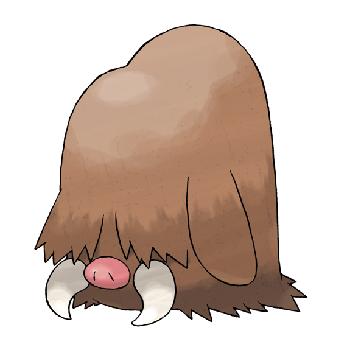

Wailmer #320 Wailmer are a common sight in north eastern Hoenn. This pokemon can eat up to one ton of food per day.
Wailord #321 Wailord are the largest pokemon in existence. Despite this fact they are elusive creatures.
 Piloswine #221 Piloswine are often seen sniffing around for food. Their powerful noses find food easily.
Jynx #124 Jynx are said to bring good luck to those who mange to encounter one. They are only found here in Winter.
Spheal #363 Spheal are commonly spotted rolling down slopes into the water. They are quite friendly pokemon!
Snorunt #361 Snorunt are the most endangered species in the area. It hides to avoid its many predators.